PGCS: Physical Law Embedded Generative Cloud Synthesis in Remote Sensing Images
IEEE Transactions on Geoscience and Remote Sensing · 2025
School of Resource and Environmental Sciences, Wuhan University
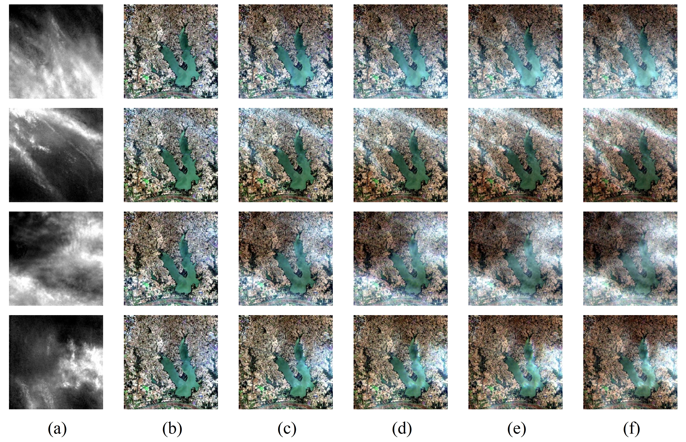
Abstract
Data quantity and quality are both critical for information extraction and analyzation in remote sensing. However, the current remote sensing datasets often fail to meet these two requirements, for which cloud is a primary factor degrading the data quantity and quality. This limitation affects the precision of results in remote sensing application, particularly those derived from data-driven techniques. In this paper, a physical law embedded generative cloud synthesis method (PGCS) is proposed to generate diverse realistic cloud images to enhance real data and promote the development of algorithms for subsequent tasks, such as cloud correction, cloud detection, and data augmentation for classification, recognition, and segmentation. The PGCS method involves two key phases: spatial synthesis and spectral synthesis. In the spatial synthesis phase, a style-based generative adversarial network is utilized to simulate the spatial characteristics, generating an infinite number of single-channel clouds. In the spectral synthesis phase, the atmospheric scattering law is embedded through a local statistics and global fitting method, converting the single-channel clouds into multi-spectral clouds. The experimental results demonstrate that PGCS achieves a high accuracy in both phases and performs better than three other existing cloud synthesis methods. Two cloud correction methods are developed from PGCS and exhibits a superior performance compared to state-of-the-art methods in the cloud correction task. Furthermore, the application of PGCS with data from various sensors was investigated and successfully extended.
Method
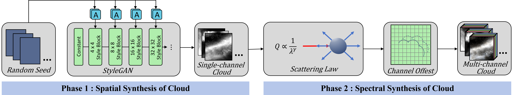
Spatial synthesis. Landsat 8/9 cirrus-band observations are selected because this band captures cloud structure with little surface interference. After radiometric calibration, cropping, and removal of nearly cloud-free patches, the data are used to train StyleGAN. Random seeds then produce spatially varied single-channel cloud radiance; thresholding and linear stretching control the simulated cloud thickness.
Spectral synthesis. The single-channel output is treated as reference cloud radiance at 1.375 µm. PGCS estimates the relationship between this radiance and the wavelength-dependent atmospheric scattering parameter using local statistics followed by a global fit. The fitted scattering law converts the reference cloud into radiance for each target band, while channel offsets simulate the parallax observed between spectral bands.
CLOUD SYNTHESIS
Simulation results
Drag each divider to compare clear imagery with PGCS-synthesized cloudy imagery across eight scenes.

 ClearPGCS synthesis
ClearPGCS synthesis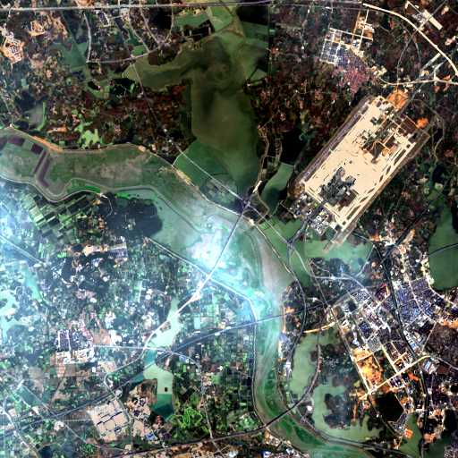
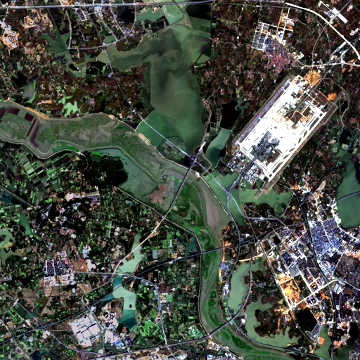
ClearPGCS synthesis
 ClearPGCS synthesis
ClearPGCS synthesis
 ClearPGCS synthesis
ClearPGCS synthesis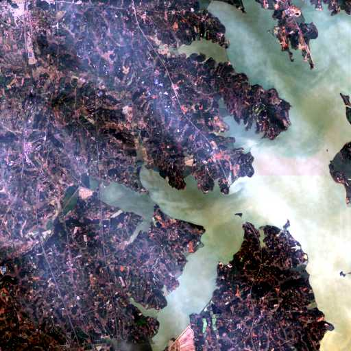
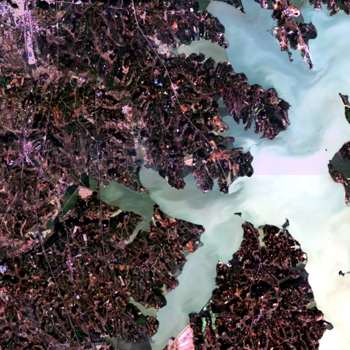
ClearPGCS synthesis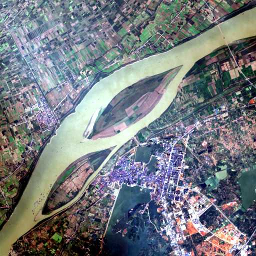
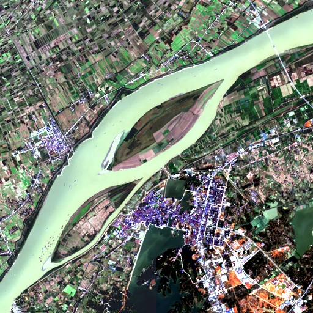
ClearPGCS synthesis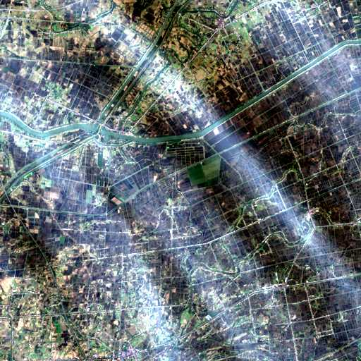
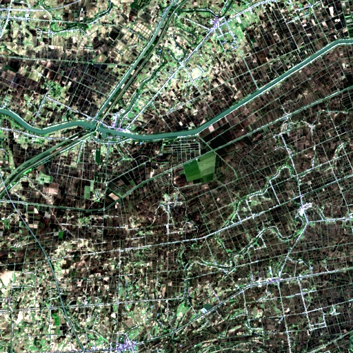
ClearPGCS synthesis
 ClearPGCS synthesis
ClearPGCS synthesisDOWNSTREAM APPLICATION
PGCS-enabled thin-cloud correction results
PGCS supports a model-driven correction method and a data-driven method trained on synthesized cloudy/clear pairs. The visual and quantitative comparisons below reproduce Figures 12–13 and Tables 3–4 of the paper.
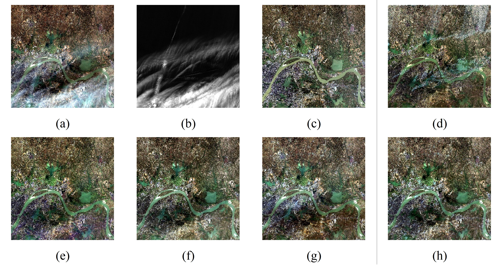
| Method | PSNR ↑ | SSIM ↑ | CC ↑ | SAM ↓ | RMSE ↓ |
|---|---|---|---|---|---|
| CR-NAPCT | 19.5854 | 0.0485 | 0.2891 | 75.0540 | 0.1049 |
| DBOASM | 30.6556 | 0.6579 | 0.4032 | 4.4094 | 0.0293 |
| GTCCM | 30.3901 | 0.6714 | 0.4246 | 4.1989 | 0.0302 |
| PGCSM | 31.6394 | 0.6754 | 0.4184 | 4.2307 | 0.0262 |
| PGCSD | 32.3222 | 0.6946 | 0.4366 | 4.1824 | 0.0242 |
*Best results are in bold, second-best results are underlined.
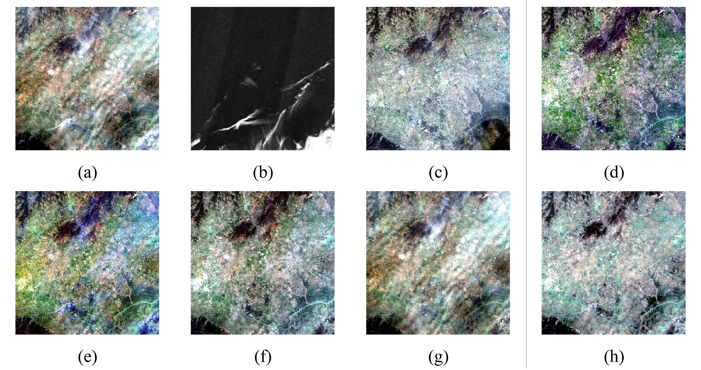
| Method | PSNR ↑ | SSIM ↑ | CC ↑ | SAM ↓ | RMSE ↓ |
|---|---|---|---|---|---|
| CR-NAPCT | 13.0598 | -0.6585 | 0.6988 | 157.3943 | 0.2223 |
| DBOASM | 34.7523 | 0.9149 | 0.8349 | 2.4790 | 0.0183 |
| GTCCM | 39.7194 | 0.9302 | 0.8300 | 2.4886 | 0.0103 |
| PGCSM | 34.8887 | 0.9025 | 0.7811 | 2.0246 | 0.0180 |
| PGCSD | 40.7497 | 0.9387 | 0.8386 | 1.4694 | 0.0092 |
*Best results are in bold, second-best results are underlined.
WINDOWS DESKTOP APP
PGCS software
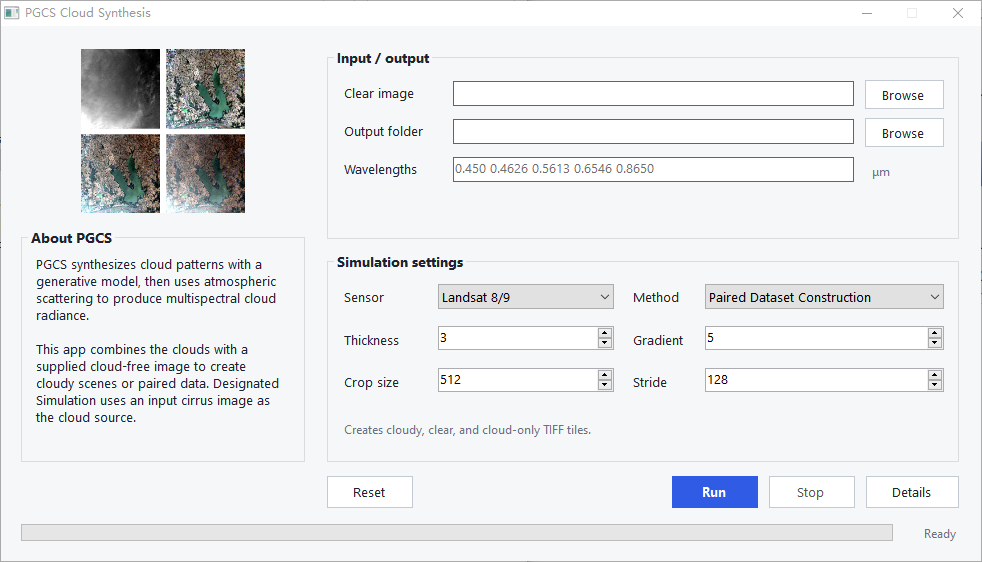
A local interface for preparing cloud simulations from multispectral imagery. Choose a sensor, supply the required images, and run one of three workflows:
- Single Scene Masking
- Generate one synthetic cloudy TIFF from a cloud-free multispectral scene.
- Paired Dataset Construction
- Crop scenes into aligned cloudy, cloud-free, and cloud-only TIFF tiles.
- Designated Simulation
- Use a supplied cirrus-band image as the cloud source for a designated simulation.
Windows package · 3.18 GiB compressed · GPU required
Download both parts and extract them into the same folder before opening CloudSynUI.exe.
Citation
If you use PGCS in your research, please cite the published paper.
@article{xu2025pgcs,
title={PGCS: Physical Law Embedded Generative Cloud Synthesis in Remote Sensing Images},
author={Xu, Liying and Li, Huifang and Shen, Huanfeng and Lei, Mingyang and Jiang, Tao},
journal={IEEE Transactions on Geoscience and Remote Sensing},
volume={63},
pages={1--17},
year={2025},
doi={10.1109/TGRS.2025.3553239}
}